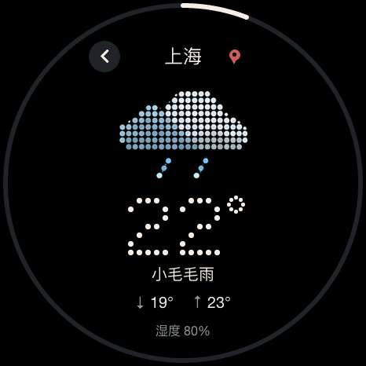
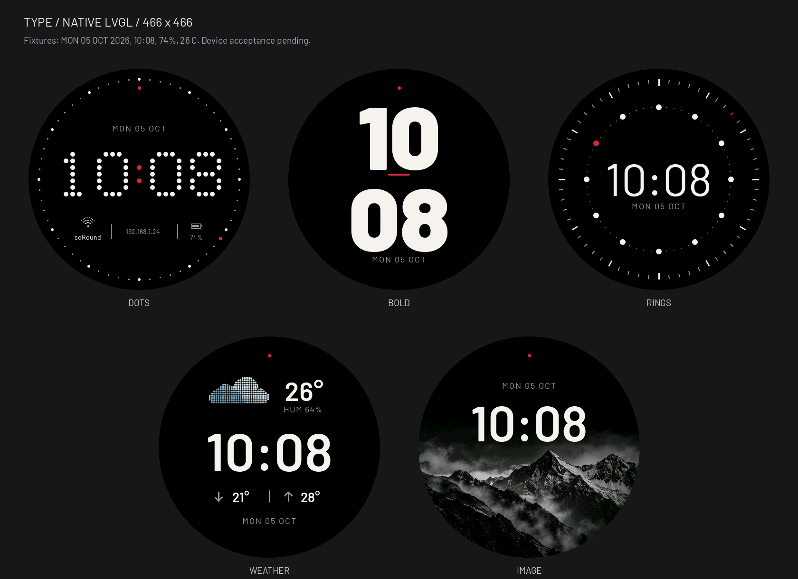
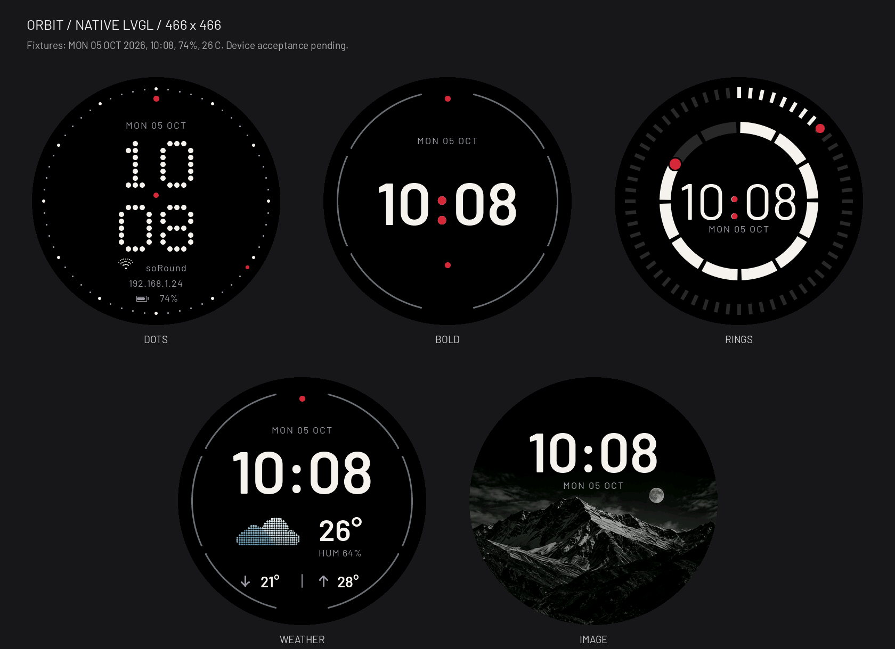
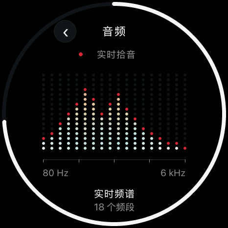
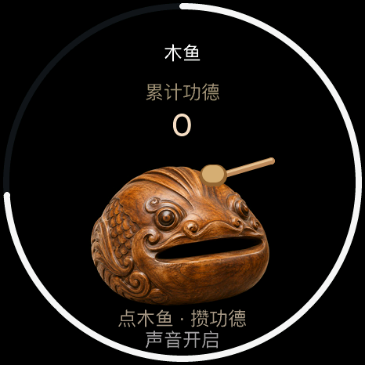
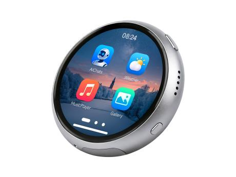

日常，好用。
天气 · 日历 · 倒计时 · 秒表
设置 · OTA 更新
出门看天气，专注时计时。
让每天的小事，触手可及。

三组视觉语言，十五款表盘。
让时间有自己的样子。

环形刻度，把时间放回轨道。
界面为原生渲染，示例数据不代表实时设备状态。
预览图片暂时无法加载，请切换其他主题或刷新页面。

天气 · 日历 · 倒计时 · 秒表
设置 · OTA 更新
出门看天气，专注时计时。
让每天的小事，触手可及。

Wi-Fi · I2C · 系统信息
音频可视化 · 水平仪 · 蓝牙遥控台 · 数字孪生
看见声音，感受姿态。
也可以成为电脑的蓝牙遥控器。

迷宫 · 流体 · 骰子与硬币
答案之书 · 星座运势 · 木鱼
找个答案，敲一下木鱼。
留一点时间，给没有目的的好玩。
完整功能展示以 v1.7 内测主线为准；正式版功能请查看对应发布说明。
十九个应用，各有自己的界面。
选一个，看看圆屏里有什么。
界面图片暂时无法加载，请选择其他应用或刷新页面。
彩色点阵天气、逐日预报与更多详情。出门前，先看一眼。
图像由当前固件的 LVGL 界面渲染，天气、日期、网络和传感器数值为固定样例。这里展示界面，实际操作在设备上完成。
一块开发板，一次烧录。
从这里开始你的 soRound。
Waveshare ESP32-S3-Touch-AMOLED-1.75C

仅面向 1.75C 型号，先核对硬件。
通过 USB 完成首次烧录，查看完整指南。
连接 Wi-Fi，在设备 OTA 页面检查更新。
内测功能需开启设备内测通道；升级前核对分区说明。Release 的应用镜像不能代替首次安装所需的完整烧录。